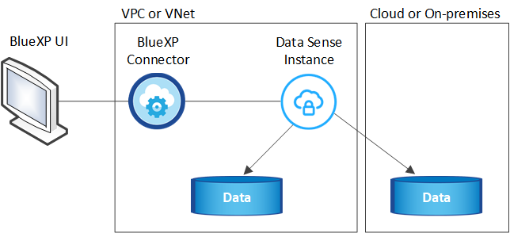

Dokumentationsänderungen beantragen
Dokumentationsänderungen beantragen In GitHub bearbeiten
In GitHub bearbeiten Leitfaden für Beitragende
Leitfaden für BeitragendeCloud Data Sense nutzen
Beitragende
Cloud Data Sense ist ein Data Governance Service für BlueXP (früher Cloud Manager), der On-Premises- und Cloud-Datenquellen Ihres Unternehmens scannt, um Daten zuzuordnen und zu klassifizieren, und private Informationen zu identifizieren. Auf diese Weise reduzieren Sie Sicherheits- und Compliance-Risiken, senken die Storage-Kosten und unterstützen Ihre Datenmigrationsprojekte.
Funktionen
Cloud Data Sense verwendet künstliche Intelligenz (KI), NLP (Natural Language Processing) und Machine Learning (ML), um die von ihm gescannten Inhalte zu verstehen, um Entitäten zu extrahieren und den Inhalt entsprechend zu kategorisieren. Dadurch kann Data Sense folgende Funktionsbereiche bereitstellen.
Einhaltung von Compliance-Vorschriften
Data Sense bietet verschiedene Tools, die Sie bei Ihren Compliance-Bemühungen unterstützen können. Mit Data Sense können Sie:
-
Ermitteln von personenbezogenen Daten
-
Vielzahl sensibler personenbezogener Daten gemäß den Datenschutzvorschriften des DSGVO, CCPA, PCI und HIPAA ermitteln.
-
Reagieren Sie auf Data Subject Access Requests (DSAR) basierend auf Name oder E-Mail-Adresse.
-
Identifizieren Sie, ob eindeutige Kennungen aus Ihren Datenbanken in Dateien in anderen Repositorys gefunden werden - stellen Sie im Grunde Ihre eigene Liste von „persönlichen Daten“ her, die in Daten-Sense-Scans identifiziert werden.
-
Benachrichtigen Sie BlueXP-Benutzer per E-Mail, wenn Dateien bestimmte PII enthalten (Sie definieren diese Kriterien mit "Richtlinien") So können Sie über einen Aktionsplan entscheiden.
Erhöhte Sicherheit
Der Datensinn kann Daten identifizieren, die potenziell gefährdet sind, wenn sie für kriminelle Zwecke genutzt werden. Mit Data Sense können Sie:
-
Ermitteln Sie alle Dateien und Verzeichnisse (Shares und Ordner) mit offenen Berechtigungen, die Ihrem gesamten Unternehmen oder der Öffentlichkeit zugänglich sind.
-
Identifizieren Sie sensible Daten, die sich außerhalb des ursprünglichen dedizierten Standorts befinden.
-
Einhaltung von Richtlinien zur Datenaufbewahrung.
-
Verwenden Sie Policies, um das Sicherheitspersonal automatisch über neue Sicherheitsprobleme zu informieren, damit sie sofort reagieren können.
-
Fügen Sie benutzerdefinierte Tags zu Dateien hinzu (z. B. „muss verschoben werden“) und weisen Sie einen BlueXP-Benutzer zu, damit diese Person Updates für die Dateien besitzen kann.
-
Anzeigen und ändern Sie "Azure Information Protection (AIP)-Etiketten" In Ihren Dateien.
Optimieren Sie die Storage-Auslastung
Data Sense bietet Tools, die Sie bei den Storage-Gesamtbetriebskosten (TCO) unterstützen. Mit Data Sense können Sie:
-
Erhöhte Storage-Effizienz durch Identifizierung doppelter oder nicht geschäftlicher Daten Mit diesen Informationen können Sie entscheiden, ob Sie bestimmte Dateien verschieben oder löschen möchten.
-
Löschen Sie Dateien, die unsicher oder zu riskant erscheinen, um in Ihrem Speichersystem zu belassen, oder die Sie als Duplikat identifiziert haben. Mit Policies können Dateien, die bestimmten Kriterien entsprechen, automatisch gelöscht werden.
-
Sparen Sie Storage-Kosten, indem Sie inaktive Daten ermitteln, die auf kostengünstigeren Objektspeicher verschoben werden können. "Weitere Informationen zu Tiering".
Beschleunigte Datenmigration
Mit Daten Sense können Sie Ihre On-Premises-Daten scannen, bevor Sie sie in die Public oder Private Cloud migrieren. Mit Data Sense können Sie:
-
Zeigen Sie die Größe der Daten an und ob die Daten vertrauliche Informationen enthalten, bevor Sie sie verschieben.
-
Filtern Sie die Quelldaten (basierend auf über 25 Kriterientypen), damit Sie nur die erforderlichen Dateien in das Ziel verschieben können - unnötige Daten werden nicht verschoben.
-
Automatisches und unterbrechungsfreies Verschieben, Kopieren oder Synchronisieren nur der erforderlichen Daten in das Cloud-Repository
Unterstützte Datenquellen
Cloud Data Sense kann strukturierte und unstrukturierte Daten aus folgenden Datenquellen scannen und analysieren:
NetApp:
-
Cloud Volumes ONTAP (implementiert in AWS, Azure oder GCP)
-
On-Premises ONTAP Cluster
-
StorageGRID
-
Azure NetApp Dateien
-
Amazon FSX für ONTAP
-
Cloud Volumes Service für Google Cloud
-
Kein NetApp:*
-
Dell EMC Isilon
-
Pure Storage
-
Nutanix
-
Alle anderen Storage-Anbieter
Wolke:
-
Amazon S3
-
Azure Blob
-
Google Cloud Storage
-
OneDrive
-
SharePoint Online
-
SharePoint On-Premises (SharePoint Server)
-
Google Drive
Datenbanken:
-
Amazon Relational Database Service (Amazon RDS)
-
MongoDB
-
MySQL
-
Oracle
-
PostgreSQL
-
SAP HANA
-
SQL Server (MSSQL)
Data Sense unterstützt NFS-Versionen 3.x, 4.0 und 4.1 sowie CIFS Versionen 1.x, 2.0, 2.1 und 3.0.
Kosten
-
Die Kosten für die Verwendung von Cloud Data Sense hängen von der Datenmenge ab, die Sie scannen. Die ersten 1 TB an Daten, die Data Sense in einem BlueXP-Arbeitsbereich scannt, sind kostenlos. Dies umfasst alle Daten aus allen Arbeitsumgebungen und Datenquellen. Um mit dem Scannen von Daten nach diesem Zeitpunkt fortzufahren, müssen Sie auf AWS, Azure oder GCP Marketplace oder eine BYOL-Lizenz von NetApp abonnieren. Siehe "Preisgestaltung" Entsprechende Details.
-
Für die Installation von Cloud Data Sense in der Cloud ist die Implementierung einer Cloud-Instanz erforderlich, was beim Cloud-Provider zu Gebühren führt, wo sie implementiert wird. Siehe Der für jeden Cloud-Provider implementierte Instanztyp. Wenn Sie Daten Sense in einem lokalen System installieren, entstehen Ihnen keine Kosten.
-
Für Cloud Data Sense ist die Implementierung eines BlueXP Connectors erforderlich. In vielen Fällen haben Sie bereits einen Connector, weil Sie andere Speicher und Dienste in BlueXP verwenden. Die Connector-Instanz verursacht Gebühren bei dem Cloud-Provider, wo sie implementiert wird. Siehe "Für jeden Cloud-Provider implementierte Instanztyp". Bei der Installation des Connectors in einem On-Premises-System entstehen keine Kosten.
Datentransferkosten
Die Datentransferkosten hängen von Ihrer Einrichtung ab. Wenn sich die Instanz und Datenquelle Cloud Data Sense in derselben Verfügbarkeitszone und Region befinden, entstehen keine Datentransferkosten. Wenn sich die Datenquelle, beispielsweise ein Cloud Volumes ONTAP-System oder S3-Bucket, jedoch in einer verschiedenen Verfügbarkeitszone oder -Region befindet, wird Ihr Cloud-Provider für Datentransferkosten berechnet. Weitere Informationen finden Sie unter diesen Links:
Die Instanz Cloud Data Sense
Wenn Sie Data Sense in der Cloud implementieren, stellt BlueXP die Instanz im selben Subnetz wie der Connector bereit. "Erfahren Sie mehr über Steckverbinder."

|
Falls der Connector lokal installiert wird, implementiert er die Cloud Data Sense Instanz in derselben VPC oder vnet wie das erste Cloud Volumes ONTAP-System in der Anfrage. Sie können auch Data Sense lokal installieren. |

Beachten Sie Folgendes über die Standardinstanz:
-
In AWS läuft Cloud Data Sense auf einem "M5.4xlarge-Instanz" Mit einer 500-GB-GP2-Festplatte. Das Betriebssystem-Image ist Amazon Linux 2 (Red hat 7.3.1).
In Regionen, in denen m5.4xlarge nicht verfügbar ist, läuft Data Sense stattdessen auf einer m4.4xlarge-Instanz.
-
In Azure wird Cloud Data Sense ausgeführt "Standard_D16s_v3 VM" Mit einer 512-GB-Festplatte. Das Betriebssystem-Image ist CentOS 7.8.
-
In GCP wird Cloud Data Sense ausgeführt "n2-Standard-16-VM" Mit einer persistenten 512-GB-Standardfestplatte. Das Betriebssystem-Image ist CentOS 7.9.
In Regionen, in denen n2-Standard-16 nicht verfügbar ist, wird Data Sense stattdessen auf einer n2d-Standard-16- oder n1-Standard-16-VM ausgeführt.
-
Der Name der Instanz ist CloudCompliance mit einem generierten Hash (UUID), der verknüpft ist. Beispiel: CloudCompliance-16bb6564-38ad-4080-9a92-36f5fd2f71c7
-
Pro Connector wird nur eine Datensense-Instanz bereitgestellt.
-
Upgrades der Software Data Sense sind automatisiert, solange die Instanz einen Internetzugang hat.

|
Die Instanz sollte jederzeit ausgeführt werden, da Cloud Data Sense die Daten kontinuierlich scannt. |
Verwenden eines kleineren Instanztyps
Sie können Data Sense auf einem System mit weniger CPUs und weniger RAM bereitstellen, aber es gibt einige Einschränkungen beim Einsatz dieser weniger leistungsstarken Systeme.
| Systemgröße | Spezifikationen | Einschränkungen |
|---|---|---|
Groß (Standard) |
16 CPUS, 64 GB RAM, 500 GB SSD |
Keine |
Mittel |
8 CPUS, 32 GB RAM, 200 GB SSD |
Langsamer Scan und kann nur bis zu 1 Million Dateien scannen. |
Klein |
8 CPUS, 16 GB RAM, 100 GB SSD |
Die gleichen Einschränkungen wie „Mittel“ und die Möglichkeit, sich zu identifizieren "Namen der Betroffenen" Innerhalb von Dateien ist deaktiviert. |
Wenn Sie Data Sense in der Cloud implementieren, senden Sie eine E-Mail an ng-contact-data-sense@netapp.com, um Hilfe zu erhalten, wenn Sie eines dieser kleineren Systeme verwenden möchten. Wir müssen mit Ihnen zusammenarbeiten, um diese kleineren Cloud-Konfigurationen zu implementieren.
Verwenden Sie bei der Implementierung von Data Sense vor Ort einfach einen Linux-Host mit den kleineren Spezifikationen. Sie müssen sich nicht an NetApp wenden, um Unterstützung zu erhalten.
Funktionsweise von Cloud Data Sense
Cloud Data Sense funktioniert auf hoher Ebene wie folgt:
-
Sie stellen eine Instanz von Data Sense in BlueXP bereit.
-
Sie ermöglichen ein hohes Mapping oder tiefes Scannen auf einer oder mehreren Datenquellen.
-
Data Sense scannt die Daten mithilfe eines KI-Lernprozesses.
-
Sie nutzen die bereitgestellten Dashboards und Berichterstellungs-Tools, um Ihre Compliance- und Governance-Bemühungen zu unterstützen.
Funktionsweise von Scans
Nachdem Sie Cloud Data Sense aktiviert und die Volumes, Buckets, Datenbankschemas oder OneDrive oder SharePoint Benutzerdaten ausgewählt haben, die Sie scannen möchten, wird sofort mit dem Scannen der Daten begonnen, um persönliche und sensible Daten zu identifizieren. Es ordnet Ihre Organisationsdaten zu, kategorisiert jede Datei und identifiziert und extrahiert Entitäten und vordefinierte Muster in den Daten. Das Ergebnis des Scans ist ein Index von persönlichen Daten, sensiblen persönlichen Daten, Datenkategorien und Dateitypen.
Durch das Mounten von NFS- und CIFS-Volumes stellt der Data Sense eine Verbindung zu den Daten wie jedem anderen Client her. NFS Volumes werden automatisch als schreibgeschützt abgerufen und müssen zur Überprüfung von CIFS Volumes Active Directory Anmeldeinformationen bereitstellen.

Nach dem ersten Scan scannt Data Sense Ihre Daten kontinuierlich, um inkrementelle Änderungen zu erkennen (deshalb ist es wichtig, die Instanz ausgeführt zu halten).
Sie können Scans auf Volume-Ebene, auf Bucket-Ebene, auf Datenbankschemaebene, auf OneDrive-Benutzerebene und auf SharePoint-Standortebene aktivieren und deaktivieren.
Was ist der Unterschied zwischen Mapping und Classification Scans
Cloud Data Sense ermöglicht es Ihnen, einen allgemeinen Scan mit „Mapping“ für ausgewählte Datenquellen durchzuführen. Das Mapping bietet nur einen Überblick über Ihre Daten auf hoher Ebene, während die Klassifizierung ein tiefes Scannen Ihrer Daten ermöglicht. Das Mapping kann auf Ihren Datenquellen sehr schnell durchgeführt werden, da es nicht auf Dateien zugegriffen wird, um die darin enthaltenen Daten zu sehen.
Viele Benutzer mögen diese Funktionalität, weil sie ihre Daten schnell scannen möchten, um die Datenquellen zu identifizieren, die mehr Forschungsarbeiten benötigen. Sie können dann Scans nur auf die erforderlichen Datenquellen oder Volumes klassifizieren.
In der folgenden Tabelle sind einige Unterschiede aufgeführt:
| Merkmal | Klassifizierung | Zuordnung |
|---|---|---|
Scangeschgeschwindigkeit |
Langsam |
Schnell |
Liste der Dateitypen und der genutzten Kapazität |
Ja. |
Ja. |
Anzahl der Dateien und genutzte Kapazität |
Ja. |
Ja. |
Alter und Größe der Dateien |
Ja. |
Ja. |
Fähigkeit, ein auszuführen "Datenzuordnungsbericht" |
Ja. |
Ja. |
Datenuntersuchung, um Dateidetails anzuzeigen |
Ja. |
Nein |
Suche nach Namen in Dateien |
Ja. |
Nein |
Erstellen "Richtlinien" Die benutzerdefinierte Suchergebnisse liefern |
Ja. |
Nein |
Kategorisieren Sie Daten mit AIP-Etiketten und Status-Tags |
Ja. |
Nein |
Quelldateien kopieren, löschen und verschieben |
Ja. |
Nein |
Möglichkeit zur Ausführung anderer Berichte |
Ja. |
Nein |
Information, die Cloud Data Sense Indizes erstellt
Data Sense erfasst, indiziert und weist Kategorien zu Ihren Daten (Dateien) zu. Die Daten, die Data Sense indiziert werden, umfassen Folgendes:
- Standard-Metadaten
-
Cloud Data Sense erfasst Standard-Metadaten zu Dateien: Dateityp, Größe, Erstellung und Änderung von Daten usw.
- Persönliche Daten
-
Personenbezogene Informationen wie E-Mail-Adressen, Identifikationsnummern oder Kreditkartennummern. "Weitere Informationen zu personenbezogenen Daten".
- Sensible persönliche Daten
-
Besondere Arten sensibler Daten, wie etwa Gesundheitsdaten, ethnische Herkunft oder politische Ansichten, wie in der DSGVO und anderen Datenschutzvorschriften definiert "Erfahren Sie mehr über sensible persönliche Daten".
- Kategorien
-
Cloud Data Sense verwendet die gescannten Daten und unterteilt sie in verschiedene Kategorien. Kategorien sind Themen, die auf der KI-Analyse des Inhalts und der Metadaten jeder Datei basieren. "Weitere Informationen zu Kategorien".
- Typen
-
Cloud Data Sense verwendet die gescannten Daten und werden nach Dateityp unterteilt. "Erfahren Sie mehr über Types".
- Name der Entität Anerkennung
-
Cloud Data Sense verwendet KI, um Namen natürlicher Personen aus Dokumenten zu extrahieren. "Informieren Sie sich über die Reaktion auf Zugriffsanfragen von Betroffenen".
Netzwerkübersicht
BlueXP implementiert die Cloud Data Sense-Instanz mit einer Sicherheitsgruppe, die eingehende HTTP-Verbindungen von der Connector-Instanz ermöglicht.
Bei der Verwendung von BlueXP im SaaS-Modus wird die Verbindung zu BlueXP über HTTPS bedient, und die zwischen Ihrem Browser und der Data Sense Instanz gesendeten privaten Daten sind mit End-to-End-Verschlüsselung gesichert, was bedeutet, dass NetApp und Dritte es nicht lesen können.
Ausgehende Regeln sind vollständig geöffnet. Zur Installation und Aktualisierung der Data Sense Software und zum Senden von Nutzungsmetriken ist Internetzugang erforderlich.
Wenn Sie strenge Netzwerkanforderungen erfüllen, "Erfahren Sie mehr über die Endpunkte, die Cloud Data Sense-Kontakte haben".
Zugriff des Benutzers auf Compliance-Informationen
Die Rolle, der jedem Benutzer zugewiesen wurde, bietet unterschiedliche Funktionen in BlueXP und in Cloud Data Sense:
-
Ein Account Admin kann Compliance-Einstellungen verwalten und Compliance-Informationen für alle Arbeitsumgebungen anzeigen.
-
Ein Workspace Admin kann Compliance-Einstellungen verwalten und Compliance-Informationen nur für Systeme anzeigen, auf die sie Zugriff haben. Wenn ein Workspace-Administrator nicht auf eine Arbeitsumgebung in BlueXP zugreifen kann, werden auf der Registerkarte Data Sense keine Compliance-Informationen für die Arbeitsumgebung angezeigt.
-
Benutzer mit der Rolle Compliance Viewer können Compliance-Informationen nur anzeigen und Berichte für Systeme erstellen, auf die sie zugreifen können. Diese Benutzer können das Scannen von Volumes, Buckets oder Datenbankschemata nicht aktivieren/deaktivieren. Diese Benutzer können Dateien auch nicht kopieren, verschieben oder löschen.